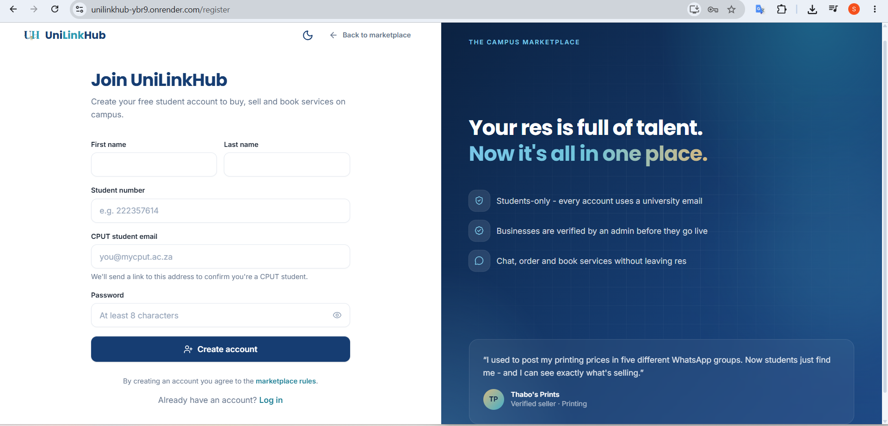
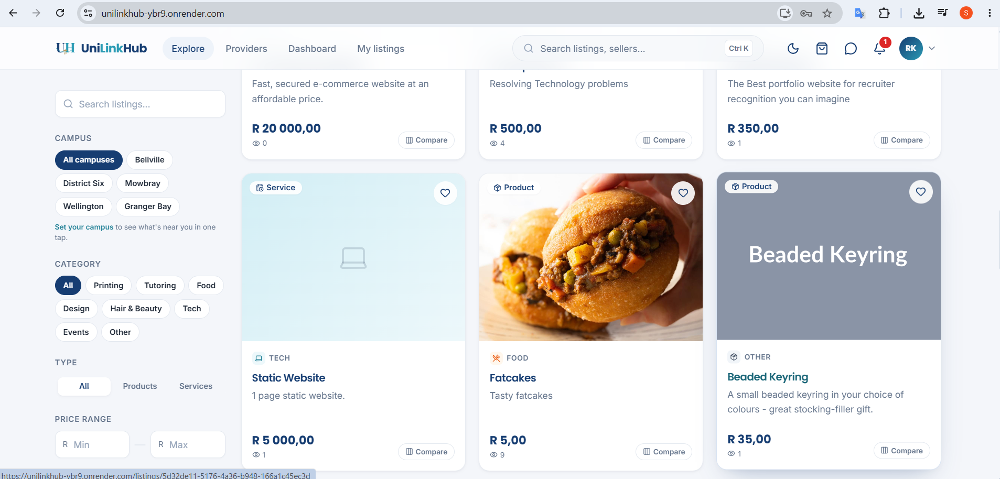
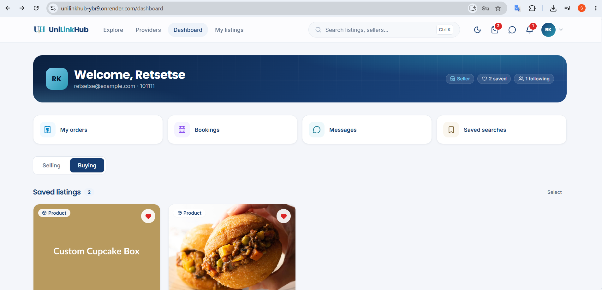
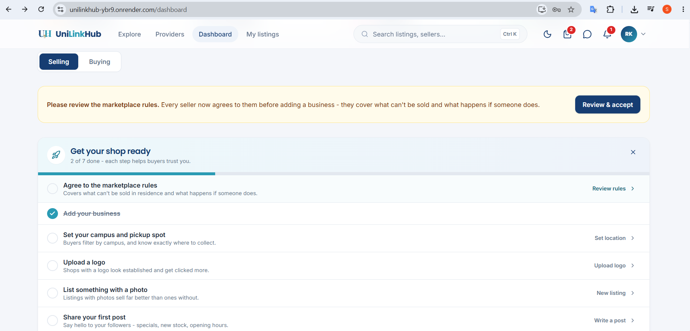
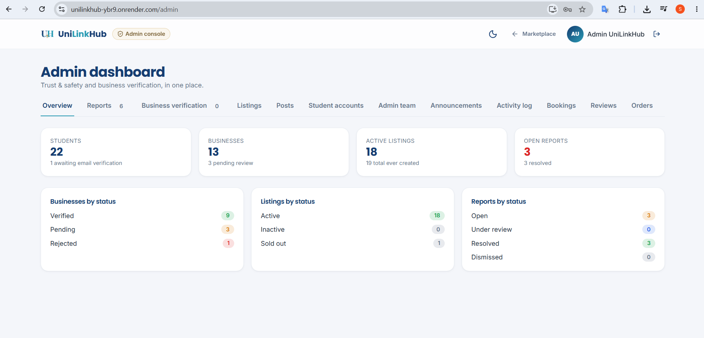
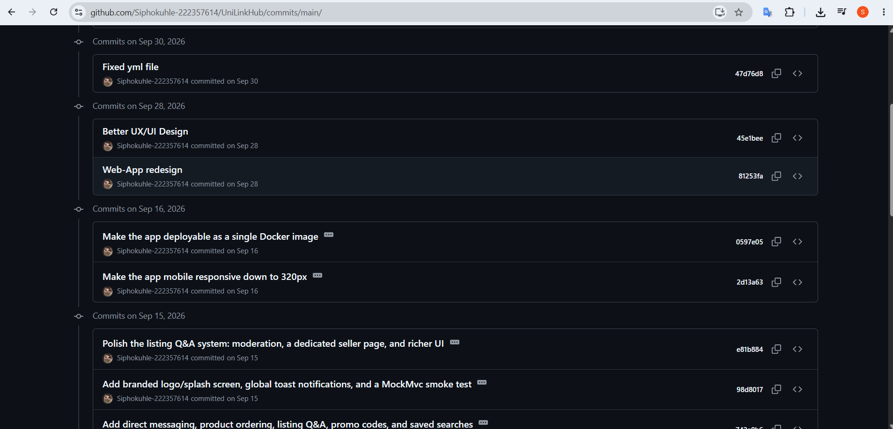
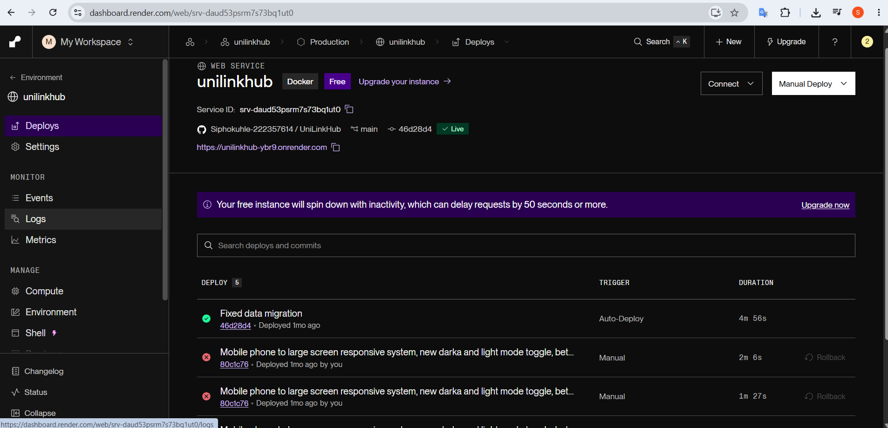
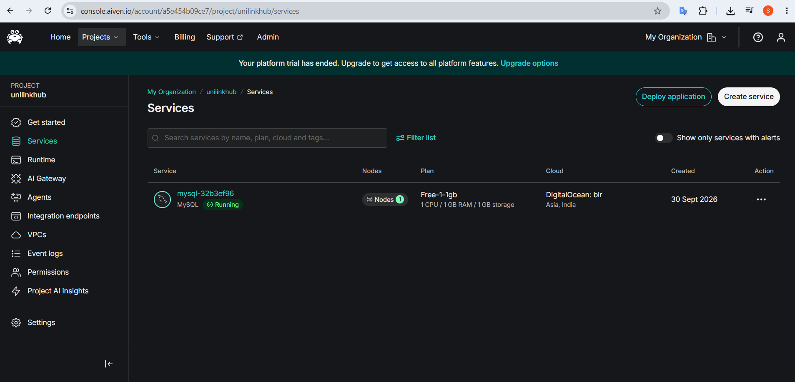

PRP370S artefact
Sprint Backlog
The work the team committed to in each sprint, tied to a sprint goal.
Evidence
Each sprint is a set of day cards on Trello. The bars show how many checklist tasks were ticked off on the board, as at the last board export (29 October 2026).
15 day cards
15 day cards
20 day cards
19 day cards
My work: the code
The Spring Boot backend, the database link and the deployment (the app on Render and the database on Aiven) are in the project repository.
Screenshots








Reflection
What happened
Sprint 1 focused on research, business planning and the proposal. Sprint 2 covered system design: the ERD, wireframes and environment setup. Sprints 3 and 4 moved into building the frontend, the Spring Boot backend and the database, then linking them and deploying. As the developer responsible for coding and deployment, my work sat mainly in Sprints 3 and 4. I delivered the Spring Boot backend, the database link, the deployment on Render, and the database deployment on Aiven. On the board, this is the Sprint 4 card “Linking the Database” (Day 6) and the card “Deploying the system” (Day 16).
What it taught me
The bars show how far each sprint was ticked off on the board, but the tasks left unticked were finished: the board was simply not updated, so it understated our progress. For example, the live app is deployed, yet the Sprint 4 deployment tasks are not all ticked. The GitHub history shows commits on 15, 16, 28 and 30 September, a month in which the Trello log shows no activity. A sprint backlog only helps if it is updated as the work happens.
What I would change
We spent a long time on the business side while other groups were already in their development phase, and we never deliberately chose our tech stack. When development started we used whatever everyone already knew: Java with Spring Boot, MySQL, Render and Aiven. Looking back, a simpler stack such as Next.js, Tailwind CSS, Supabase (Postgres) and Vercel would have let a small student team build, deploy and change things faster. Next time I would choose the stack in the first sprint by comparing options against the team’s skills and the deadline, plan the technical side alongside the business side, update the board daily and agree a sprint goal on day one.